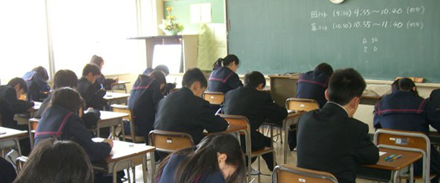

研究活動

ほそごう学園では、学校教育目標「確かな学力と豊かな人権感覚の育成を仲間とともに」の実現をめざし、小学１年生から中学３年生までの９年間を見据えた連続性、一貫性のある教育の在り方を模索する実践研究を重ねています。

- 研究構想
- 学力保障と人権教育を柱とし、自ら主体的に考え、多様な他者と協働的に学ぶ授業づくりを進めるなかで、将来、変化の激しい未知の社会の中においても、自らの人生をより豊かにマネジメントすることができる力の育成をめざしていきます。

- 小中合同の授業研究
- ９年間の学びの連続性、一貫性を大切にしていくため、すべての研究活動を、小中合同で行っています。互いの授業を定期的に交流し合いながら、発達段階に応じたより良い授業のあり方を共に模索しています。

- ほそごうの授業づくり
- 豊かな対話を生み出す学習集団づくりを基盤に、
①見通しをもって自ら課題や問題と向き合うこと
②対話を通して他者と豊かに関わり合うこと
③自らの学びのプロセスを振り返ること
を大切にした授業づくりに取り組んでいます。